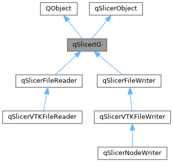
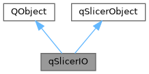

|
Slicer 5.13
Slicer is a multi-platform, free and open source software package for visualization and medical image computing
|
Loading...
Searching...
No Matches
|
Slicer 5.13
Slicer is a multi-platform, free and open source software package for visualization and medical image computing
|
#include <Base/QTCore/qSlicerIO.h>


Public Types | |
| typedef QString | IOFileType |
| typedef QVariantMap | IOProperties |
| typedef QObject | Superclass |
Public Member Functions | |
| virtual Q_INVOKABLE QString | description () const =0 |
| Unique name of the reader/writer. | |
| virtual Q_INVOKABLE qSlicerIO::IOFileType | fileType () const =0 |
| Multiple readers can share the same file type. | |
| virtual Q_INVOKABLE vtkMRMLFileIOHandler * | ioHandler () const |
| virtual Q_INVOKABLE qSlicerIOOptions * | options () const |
| qSlicerIO (QObject *parent=nullptr) | |
| void | setMRMLScene (vtkMRMLScene *scene) override |
| Set the scene of this object. | |
| virtual Q_INVOKABLE vtkMRMLMessageCollection * | userMessages () const |
| Additional warning or error messages occurred during IO operation. | |
| ~qSlicerIO () override | |
 Public Member Functions inherited from qSlicerObject Public Member Functions inherited from qSlicerObject | |
| vtkMRMLScene * | mrmlScene () const |
| Return a pointer on the MRML scene. | |
| qSlicerObject () | |
| virtual | ~qSlicerObject () |
Static Public Member Functions | |
| static IOProperties | fromVTKProperties (vtkMRMLIOProperties *vtkProperties) |
| static bool | qImageToVTKImageData (const QImage &image, vtkImageData *imageData) |
| Convert Qt image to VTK image (RGBA, unsigned char). | |
| static void | toVTKProperties (const IOProperties &properties, vtkMRMLIOProperties *vtkProperties) |
| static QImage | vtkImageDataToQImage (vtkImageData *imageData) |
| Convert VTK image (unsigned char, 1, 3, or 4 components) to Qt image. | |
Protected Attributes | |
| QScopedPointer< qSlicerIOPrivate > | d_ptr |
| Protected Attributes inherited from qSlicerObject | |
| QScopedPointer< qSlicerObjectPrivate > | d_ptr |
Base class for qSlicerFileReader and qSlicerFileWriter
Definition at line 49 of file qSlicerIO.h.
| typedef QString qSlicerIO::IOFileType |
Definition at line 60 of file qSlicerIO.h.
| typedef QVariantMap qSlicerIO::IOProperties |
Definition at line 61 of file qSlicerIO.h.
| typedef QObject qSlicerIO::Superclass |
Definition at line 56 of file qSlicerIO.h.
|
explicit |
|
override |
|
pure virtual |
Unique name of the reader/writer.
Implemented in qSlicerVTKFileReader, and qSlicerVTKFileWriter.
|
pure virtual |
Multiple readers can share the same file type.
Implemented in qSlicerVTKFileReader, and qSlicerVTKFileWriter.
|
static |
Convert VTK properties to Qt properties. Lists are converted to QVariantList, nested properties to QVariantMap, vtkImageData values to QImage. Objects that cannot be converted to Qt types are ignored and an error is logged.
|
virtual |
VTK-based reader or writer that performs all the tasks of this class. Returns nullptr (legacy Qt-based readers and writers implement reading and writing themselves). It is overridden in qSlicerVTKFileReader and qSlicerVTKFileWriter.
Reimplemented in qSlicerVTKFileReader, and qSlicerVTKFileWriter.
|
virtual |
Returns a list of options for the reader. qSlicerIOOptions can be derived and have a UI associated to it (i.e. qSlicerIOOptionsWidget). Warning: you are responsible for freeing the memory of the returned options
Reimplemented in qSlicerNodeWriter.
|
static |
Convert Qt image to VTK image (RGBA, unsigned char).
|
overridevirtual |
Set the scene of this object.
Reimplemented from qSlicerObject.
Reimplemented in qSlicerVTKFileReader, and qSlicerVTKFileWriter.
|
static |
Convert Qt properties to VTK properties. Supported value types: bool, integer (including 64-bit), floating-point, QString, QStringList, QVariantList (of bool, integer, floating-point, and QString values), QVariantMap and QVariantHash (converted to nested properties), QImage and QPixmap (converted to vtkImageData). Properties of other types are ignored and an error is logged.
|
virtual |
Additional warning or error messages occurred during IO operation.
Reimplemented in qSlicerVTKFileReader, and qSlicerVTKFileWriter.
|
static |
Convert VTK image (unsigned char, 1, 3, or 4 components) to Qt image.
|
protected |
Definition at line 103 of file qSlicerIO.h.